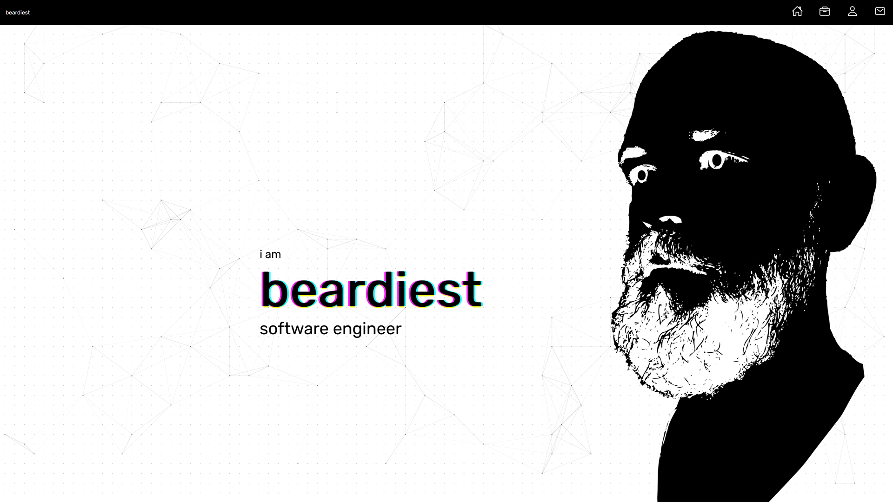

Personal Website Project
beardiest.com
A personal website to showcase projects and development work.
Media

Stage preview showing website layout, design elements, and user interface.
Demo clip highlighting website navigation and interactive features.
Overview
I wanted to create a personal website that showcases my projects and development work in a visually appealing and user-friendly manner. The goal was to provide visitors with an engaging experience while keeping the design minimal.
Architecture and Systems
- HTML for structure and content
- CSS for styling and layout
- JavaScript for interactivity and dynamic content
Challenges and Outcomes
How to make the site look visually appealing while maintaining usability.